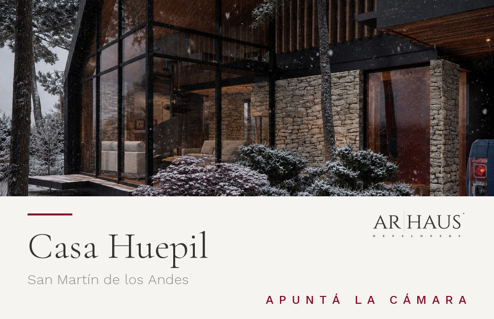

Apuntá a la tarjeta, entera y bien iluminada

Realidad aumentada
Poné la tarjeta sobre una mesa, apuntale con la cámara y la casa aparece parada encima. Caminá alrededor: gira con la tarjeta. Si no la tenés impresa, abrila en la pantalla de la compu y apuntale con el teléfono.
Ver cómo queda, sin tarjeta Descargar para imprimir · 85 × 55 mm